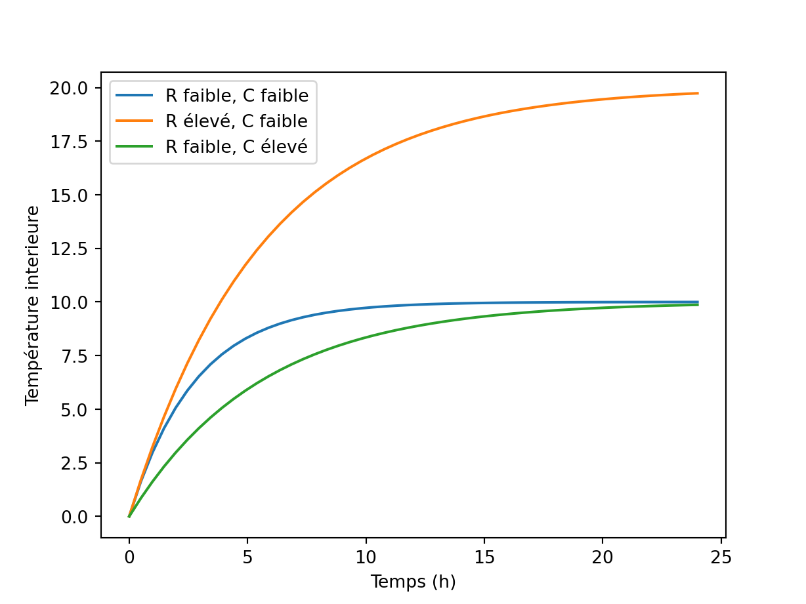

Chapitre 5 Régime transitoire
On commence par rappeler l’équation (2.1) du bilan de chaleur global à l’échelle d’une zone thermique : la variation de l’énergie interne d’une zone est la différence entre le flux de chaleur entrant et le flux de chaleur sortant. \[\begin{equation} C \frac{\partial T_i}{\partial t} = \Phi_\mathit{CVC} + \Phi_\mathit{apports} - \Phi_\mathit{déperditions} \tag{5.1} \end{equation}\]
Pour le dimensionnement des systèmes CVC, on peut faire un bilan global des apports et des déperditions en conditions stationnaires. La température est supposée constante (\(\frac{\partial T_i}{\partial t}=0\)) en tout point du bâtiment et à l’extérieur, égale à une certaine température de dimensionnement, ou bien une température annuelle moyenne si on veut calculer une consommation totale.
Dans la réalité, l’hypothèse stationnaire est toujours fausse : les conditions météo et l’occupation du bâtiment varient dans le temps. Un vrai calcul thermique ne peut pas s’affranchir du terme de gauche de l’équation (5.1).
5.1 Conduction dans un mur
Revenons sur l’équation (3.4) qui décrit la conduction 1D dans une paroi, le long d’une direction \(x\) :
\[\begin{align} \rho c_p \frac{\partial T}{\partial t} & = \lambda \frac{\partial^2 T}{\partial x^2} \tag{5.2} \end{align}\]
On a montré dans le chapitre 3 qu’en régime stationnaire, le profil de température de part et d’autre d’un composant de paroi de conductivité thermique uniforme était linéaire. En régime transitoire, un des moyens de calculer les transferts est de discrétiser le mur en plusieurs noeuds de température
Figure 5.1: Discrétisation d’un mur pour le transfert thermique transitoire
On suppose comme montré sur la figure 5.1 qu’un mur d’épaisseur \(e\) est discrétisé en \(n\) noeuds de température \(T_i\) séparés d’une distance \(\Delta x\). L’équation (5.2) discrétisée devient pour chaque point \(i\):
\[\begin{equation} \rho c_p \frac{\partial T_i}{\partial t} = \frac{\lambda}{2 \, \Delta x^2} \left(T_{i-1}-2T_i+T_{i+1}\right) \tag{5.3} \end{equation}\]
On va discrétiser à nouveau, cette fois sur l’échelle du temps : pour un point \(i\) donné dans la paroi, l’évolution de la température s’exprime en fonction de la différence entre sa valeur \(T_i^{(t)}\) à l’instant \(t\), et sa valeur \(T_i^{(t+1)}\) au pas de temps suivant \(t+\Delta t\).
\[\begin{equation} \frac{\rho c_p}{\Delta t} \left( T_i^{(t+1)} - T_i^{(t)} \right)= \frac{\lambda}{2 \, \Delta x^2} \left(T_{i-1}^{(t+1)}-2T_i^{(t+1)}+T_{i+1}^{(t+1)}\right) \tag{5.4} \end{equation}\]
Ceux qui connaissent la méthode des différences finies auront remarqué qu’on a choisi ici un schéma implicite : les températures à droite de l’équation sont prises au pas de temps \(t+1\). Calculer la conduction thermique transitoire dans une paroi 1D mène donc à résoudre un système matriciel de \(n\) équations à \(n\) inconnues, à chaque pas de temps, car toutes les valeurs des températures sont liées entre elles. Ca n’est pas très compliqué si on sait écrire deux lignes de code, mais ce serait un peu long à détailler ici.
Pour simplifier, on peut présenter l’exemple d’un mur discrétisé très grossièrement : une seule température centrale en plus des deux conditions aux limites \(T_1\) et \(T_2\).

Figure 5.2: Capacité thermique d’un mur
L’équation (5.3) peut se réécrire pour exprimer l’évolution de la température moyenne du mur \(T\) en fonction de ses deux températures de surface :
\[\begin{align} \left(\rho \, e \, c_p \right) \frac{\partial T}{\partial t} & = \frac{T_1 - T}{e / 2\lambda} + \frac{T_2 - T}{e / 2\lambda} \tag{5.5} \\ C \frac{\partial T}{\partial t} & = \frac{T_1 - T}{R} + \frac{T_2 - T}{R} \tag{5.6} \end{align}\]
Comme on a défini la notion de résistance thermique dans le chapitre 3, on voit donc qu’on peut aussi définir la capacité thermique d’un composant en suivant la même analogie électrique : \(C=\rho \, e \, c_p\), ici en (J.m\(^2\).K\(^{-1}\)). Il s’agit d’un indicateur de la capacité d’un composant à stocker la chaleur lors de variations de conditions aux limites. Cette capacité est importante pour les transferts en régime transitoire, et détermine le phénomène d’inertie thermique qu’on va illustrer avec les exercices ci-dessous.
5.2 Modèles RC
On peut généraliser ce qu’on vient de faire sur une paroi à l’ensemble du bâtiment. Celui-ci est alors représenté par un schéma RC où les noeuds de température sont reliés par des résistances représentant les différents types de transfert, et certains noeuds se voient assigner une capacité.
Figure 5.3: Modèle RC pour un local
- Les parois lourdes peuvent se voir assigner une ou plusieurs capacités thermiques selon leur masse et leur épaisseur.
- La masse thermique des parois légères (vitres, cloisons) est souvent négligée ; celles-ci peuvent alors ne pas se voir assigner de capacité thermique dans le schéma, ce qui n’empêche pas de calculer leur température.
- La capacité thermique de l’air d’une zone et de son ameublement peut aussi être prise en compte.
C’est ce que font les logiciels de simulation thermique dynamique, mais avec un niveau de détail plus élevé : les parois y sont discrétisées assez finement pour que les profils de températures, linéaires par morceaux, s’approchent d’un profil réaliste.
5.3 Exercices : inertie thermique
5.3.1 Exercice 1 : bâtiment lourd ou léger

Figure 5.4: Exercice: inertie thermique
On représente un bâtiment par une seule résistance thermique \(R\) et une capacité thermique \(C\). Une puissance de chauffage \(\Phi\) (W) est imposée à l’intérieur, et la température extérieure est notée \(T_e\). L’évolution de la température intérieure \(T\) suit donc l’équation différentielle :
\[\begin{equation} C \frac{\partial T}{\partial t} = \frac{1}{R} \left(T_e-T\right) + \Phi \tag{5.7} \end{equation}\]
Pour résumer, \(R\) représente le niveau d’isolation global du bâtiment et \(C\) sa masse thermique totale. On va voir dans cet exercice comment ces deux grandeurs influent sur l’inertie du bâtiment en hiver et en été.
Partie 1: hiver
On suppose que le bâtiment est initialement à la température extérieure \(T_e\). A l’instant \(t=0\), on allume le chauffage \(\Phi\).
- Résoudre l’équation (5.7) pour démontrer que l’évolution de la température intérieure suit : \[\begin{equation} T = T_e + R \, \Phi \left(1-\mathrm{exp}\left(-\frac{t}{RC}\right)\right) \tag{5.8} \end{equation}\]
- Tracer l’allure de \(T\). Comment cette allure varie-t-elle avec différentes valeurs de \(R\) et \(C\) ?
Solution
Voici un petit programme python pour tracer l’allure de \(T\) pour différentes valeurs de \(R\) et \(C\).
import numpy as np
import matplotlib.pyplot as plt
# On suppose une température extérieure de 0 et un chauffage de 1000 W
Te = 0
Phi = 1000
t = np.linspace(0, 86400) # 24 heures
# L'équation de la température intérieure
def T(R, C):
return Te + R*Phi*(1-np.exp(-t/R/C))
# Tracer un graphe
plt.figure()
plt.plot(t/3600, T(0.01, 1e6), label="R faible, C faible")
plt.plot(t/3600, T(0.02, 1e6), label="R élevé, C faible")
plt.plot(t/3600, T(0.01, 2e6), label="R faible, C élevé")
plt.xlabel("Temps (h)")
plt.ylabel("Température interieure")
plt.legend()
On est partis ici d’une valeur donnée pour \(R\) et \(C\) (courbe bleue), et on montre l’effet d’une augmentation soit de \(R\) (en orange), soit de \(C\) (en vert).
- La température est initialement égale à \(T_e\) et atteint une valeur à l’équilibre avec un profil exponentiel amorti.
- Une augmentation de \(R\) (comparaison des courbes bleue et orange), donc une meilleure isolation, entraîne une hausse de la température d’équilibre pour une même puissance de chauffage. On atteint cet équilibre plus lentement .
- Une augmentation de \(C\) (comparaison des courbes bleue et verte) n’entraîne pas une augmentation de la température d’équilibre: celle-ci dépend donc de l’isolation mais pas de la masse thermique du bâtiment. On atteint également cet équilibre plus lentement, comme si on avait augmenté \(R\).
Partie 2: été
Figure 5.5: Allure de la température extérieure en été
On se place maintenant en été, et on suppose que la température extérieure suit une sinusoïde de fréquence 24h, entre des valeurs extrêmes de 10°C et 30°C :
\[\begin{align} T_e & = 20 + 10 \, \mathrm{sin}(\omega \, t) \tag{5.9} \\ \omega & = \frac{2 \pi}{24 \times 3600} \tag{5.10} \end{align}\]
De plus, la puissance de chauffage est nulle: \(\Phi=0\).
- Résoudre l’équation différentielle (5.7) avec la méthode de votre choix.
- Tracer l’allure de \(T\). Comment cette allure varie-t-elle avec différentes valeurs de \(R\) et \(C\) ?
Solution
On utilise la méthode des impédances complexes puisque le bâtiment est représenté par un filtre passe-bas RC. On peut montrer que l’impédance complexe du bâtiment est : \[\begin{equation} Z(j\omega) = \frac{T_i}{T_e} = \frac{1}{1+jRC\omega} \tag{5.11} \end{equation}\]
On en déduit que \(T\) suit une sinusoïde de même fréquence et valeur moyenne que \(T_e\), avec une amplitude \(A\) et un déphasage \(\psi\) donnés par :
\[\begin{align} T & = 20 + A \, \mathrm{sin}(\omega \, t + \psi) \tag{5.12} \\ A & = \frac{10}{\sqrt{1+(RC\omega)^2}} \tag{5.13} \\ \psi & = -\mathrm{arctan} (RC\omega) \tag{5.14} \end{align}\]
Refaisons un peu de python pour voir ce que ça donne.
import numpy as np
import matplotlib.pyplot as plt
t = np.linspace(0, 86400) # 24 heures
omega = 2*np.pi / 24 / 3600
Te = 20 + 10 * np.sin(omega*t)
# L'équation de la température intérieure
def T(R, C):
A = 10 / np.sqrt(1+(R*C*omega)**2)
psi = -np.arctan(R*C*omega)
return 20 + A * np.sin(omega*t + psi)
# Tracer un graphe
plt.figure()
plt.plot(t/3600, Te, '-k', label="T extérieure")
plt.plot(t/3600, T(0.01, 1e6), label="R faible, C faible")
plt.plot(t/3600, T(0.02, 1e6), label="R élevé, C faible")
plt.plot(t/3600, T(0.01, 2e6), label="R faible, C élevé", linestyle='--')
plt.plot(t/3600, T(0.02, 2e6), label="R élevé, C élevé")
plt.xlabel("Temps (h)")
plt.ylabel("Température interieure")
plt.legend()- Dans tous les cas, la température intérieure suit une sinusoïde avec qui suit la température extérieure, mais avec un déphasage et une réduction d’amplitude.
- Augmenter \(R\) ou \(C\) augmente le déphasage et l’amortissement. Un bâtiment à forte inertie, ou bien isolé, permet d’être mieux protégé contre les pics de chaleur : ils sont plus amortis, et peuvent être assez déphasés pour être effacés par une surventilation nocturne.
- Comme le montrent les équations (5.12) à (5.14), il n’y a pas de différence mathématique entre une augmentation de \(R\) ou de \(C\). L’idéal contre la surchauffe estivale est un bâtiment à la fois bien isolé et inertiel.
5.3.2 Exercice 2 : isolation intérieure ou extérieure
Cet exercice est plus une démonstration qu’un vrai exercice. On cherche à montrer la différence entre l’isolation par l’intérieur et l’isolation par l’extérieur, en termes de déperditions et d’inertie thermique. Pour cela on utilise un modèle RC un peu plus compliqué que dans l’exercice précédent.
Figure 5.6: Modèle à 2 résistances et 2 capacités pour comparer les isolations par l’intérieur et par l’extérieur
Le modèle de la figure 5.6 possède 2 résistances et 2 capacités, qui peuvent représenter grossièrement deux faces d’une paroi. Il permet de calculer l’évolution de la température intérieure \(T_i\) et la température de l’enveloppe \(T_e\), en fonction du chauffage \(\Phi\) et de la température extérieure \(T_o\).
Pour modéliser un mur isolé par l’intérieur, on choisira :
- Une forte résistance \(R_1\) et faible capacité \(C_i\) qui représentent l’isolant ;
- Une faible résistance \(R_2\) et forte capacité \(C_e\) qui représentent le mur porteur.
Ces valeurs seront inversées pour un mur isolé par l’extérieur.
Dans le bloc de code ci-dessous, on résoud le système avec un schéma numérique explicite très simple. On impose les mêmes conditions que dans l’exercice 1 en été : pas de chauffage, température extérieure sinusoïdale.
import numpy as np
import matplotlib.pyplot as plt
# Conditions : température extérieure To et puissance de chauffage Phi
t = np.linspace(0, 4*86400, num=400) # 4 jours de simulation
omega = 2*np.pi / 24 / 3600
To = 20 + 10 * np.sin(omega*t)
Phi = np.zeros(len(t))
# L'équation de la température intérieure
def RC(R1, R2, Ci, Ce):
Ti = np.zeros(len(t))
Te = np.zeros(len(t))
# Températures initiales
Ti[0] = 20
Te[0] = ( R1*To[0] + R2*Ti[0] ) / (R1 + R2)
# Boucle pour calculer toutes les températures
for i in range(1, len(t)):
dt = t[i] - t[i-1]
Ti[i] = Ti[i-1] + dt / Ci * ( (Te[i-1]-Ti[i-1])/R1 + Phi[i-1] )
Te[i] = Te[i-1] + dt / Ce * ( (Ti[i-1]-Te[i-1])/R1 + (To[i-1]-Te[i-1])/R2 )
return Ti
# Tracer un graphe
plt.figure()
plt.plot(t/3600, To, '-k', label="T extérieure")
plt.plot(t/3600, RC(0.1, 0.01, 1e5, 1e6), label="Isolation intérieure")
plt.plot(t/3600, RC(0.01, 0.1, 1e6, 1e5), label="Isolation extérieure")
plt.xlabel("Temps (h)")
plt.ylabel("Température interieure")
plt.legend()Les conditions sont évidemment très simplifiées mais permettent de comparer les solutions d’isolation par l’intérieur ou par l’extérieur.
- La résistance totale \(R_1+R_2\) est la même dans les deux cas. Si on se plaçait en hiver en conditions stationnaires, la température intérieure à l’équilibre serait la même. Il n’y a pas de différence entre isolation intérieure et extérieure en termes de déperditions.
- En revanche, on voit ci-dessus que l’isolation par l’extérieur amortit beaucoup plus les pics de chaleur. L’inertie de cette solution est bien plus élevée, ce qui la rend plus efficace qu’une isolation intérieure en termes de protection contre la surchauffe estivale.